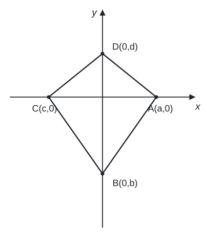

x ו־y הם מספרים שלמים. נתון: 9 ≤ x² ≤ 81 , 25 ≤ y² ≤ 100
ערכו המינימלי של הביטוי yx הוא:
הצגת הפתרון
התשובה הסופית4תשובה (4)−3⅓
דרך הפתרון והסבר
נפענח את הנתונים:9 ≤ x² ≤ 81 ⇒ 3 ≤ |x| ≤ 9 (x יכול להיות חיובי או שלילי).25 ≤ y² ≤ 100 ⇒ 5 ≤ |y| ≤ 10.כדי ש־yx יהיה מינימלי (הכי שלילי), נרצה שהשבר יהיה שלילי וגדול בערכו המוחלט:סימנים הפוכים – כדי שהשבר יהיה שלילי.מונה גדול ככל האפשר בערכו המוחלט: |y| = 10.מכנה קטן ככל האפשר בערכו המוחלט: |x| = 3.למשל y = −10, x = 3:yx = −103 = −313
מוקשים נפוצים
x ו־y יכולים להיות שליליים – מי שבודק רק חיוביים מקבל 59 או 53.
נבדקהפתרון תואם את מפתח התשובות של הספר.
שאלה 2
ל־60% מתושבי חיפה יש חיית מחמד כלשהי בבית. איזה מהמספרים הבאים יכול להיות מספר תושבי העיר חיפה שלהם יש חיית מחמד כלשהי בביתם?
הצגת הפתרון
התשובה הסופית3תשובה (3)70,203
דרך הפתרון והסבר
נסמן את מספר התושבים ב־N ואת מספר בעלי החיות ב־P.P = 60% · N = 35Nמבודדים את N:N = 5P3N הוא מספר שלם, ו־5 ו־3 זרים, ולכן P חייב להתחלק ב־3.כלל ההתחלקות ב־3: סכום הספרות מתחלק ב־3.70,201: 7 + 0 + 2 + 0 + 1 = 10 ✗70,202: 11 ✗70,203: 12 ✓70,204: 13 ✗התשובה: 70,203.
מוקשים נפוצים
המספר הנתון הוא של בעלי החיות (60%), לא של כל התושבים – לכן הוא צריך להתחלק ב־3, לא ב־5.
נבדקהפתרון תואם את מפתח התשובות של הספר.
שאלה 3
לכל מספר x הוגדרה הפעולה $ כך: $(x) = x² · (x² + 1) · (x² − 4)
מהו תחום הערכים של x שעבורו מתקיים $(x) > 0 ?
הצגת הפתרון
התשובה הסופית4תשובה (4)2 < x או x < −2
דרך הפתרון והסבר
$(x) הוא מכפלה של שלושה גורמים. נבדוק את הסימן של כל אחד:x² ≥ 0, ושווה 0 רק כש־x = 0.x² + 1 ≥ 1 – תמיד חיובי.x² − 4 – הסימן תלוי ב־x.כש־x = 0 המכפלה היא 0, ולא גדולה מ־0. לכל x אחר שני הגורמים הראשונים חיוביים, ולכן הסימן נקבע לפי x² − 4:x² − 4 > 0 ⇒ x² > 4 ⇒ |x| > 2כלומר x > 2 או x < −2.
מוקשים נפוצים
x² > 4 נותן שני תחומים – גם x < −2, לא רק x > 2.
נבדקהפתרון תואם את מפתח התשובות של הספר.
שאלה 4
שני רצים תכננו לצאת לריצת לילה מנקודה A לנקודה B. שניהם משתמשים במפות בעלות קנה מידה זהה. אורך מסלולו של הרץ הראשון על המפה הוא 30 ס"מ. אורך מסלולו של הרץ השני על המפה הוא 40 ס"מ. מהירותו של הרץ הראשון קטנה ב־25% ממהירותו של הרץ השני. אם שניהם יצאו באותו הזמן מנקודה A, מה מהבאים נכון בהכרח?
הצגת הפתרון
התשובה הסופית3תשובה (3)שני הרצים הגיעו יחדיו לנקודה B
דרך הפתרון והסבר
קנה המידה זהה, ולכן יחס המרחקים האמיתיים כיחס המרחקים במפה:מסלול ראשון : מסלול שני = 30 : 40 = 3 : 4נסמן את מהירות הרץ השני ב־v. הראשון איטי ממנו ב־25%:מהירות הראשון: 0.75v = 34vזמן = דרך ÷ מהירות. נסמן את המסלולים 3k ו־4k:זמן הראשון: 3k3v/4 = 4kvזמן השני: 4kvהזמנים שווים – שני הרצים הגיעו יחד.
מוקשים נפוצים
להשוות זמנים ולא מרחקים: המסלול הקצר יותר אינו מבטיח הגעה ראשונה.
נבדקהפתרון תואם את מפתח התשובות של הספר.
שאלה 5
לעידן הייתה קוביית בצק שאורך מקצועה הוא 3πh. עידן הסיר מהקובייה חתיכת בצק שנפחה הוא 2π³h³. מחתיכת הבצק שנותרה הוא יצר גליל חדש שאורכו h.
מה רדיוס הבסיס של הגליל החדש?
הצגת הפתרון
התשובה הסופית3תשובה (3)5πh
דרך הפתרון והסבר
נפח הקובייה:(3πh)³ = 27π³h³הוסרה חתיכה בנפח 2π³h³, ולכן נשאר:27π³h³ − 2π³h³ = 25π³h³מהבצק הזה נוצר גליל בגובה h. נפח גליל הוא πr² · h:πr²h = 25π³h³מחלקים ב־πh:r² = 25π²h²r = 5πh
מוקשים נפוצים
(3πh)³ = 27π³h³ – החזקה חלה על כל הגורמים, כולל π ו־h.
נבדקהפתרון תואם את מפתח התשובות של הספר.
שאלה 6
A, B ו־C הן אותיות המייצגות ספרות שונות זו מזו בין 1 ל־9. נתון: B = 2A ,
AB
× B
-----
2CB
B − C − A = ?
הצגת הפתרון
התשובה הסופית2תשובה (2)2
דרך הפתרון והסבר
התרגיל: AB × B = 2CB, כאשר B = 2A.B ספרה, ולכן A יכול להיות 1, 2, 3 או 4 (אחרת B = 2A גדול מ־9). נבדוק כל אחד:A = 1, B = 2: 12 × 2 = 24 – לא תלת־ספרתי ✗A = 2, B = 4: 24 × 4 = 96 – לא תלת־ספרתי ✗A = 3, B = 6: 36 × 6 = 216 – מתאים לצורה 2CB עם C = 1 ✓A = 4, B = 8: 48 × 8 = 384 – לא מתחיל ב־2 ✗לכן A = 3, B = 6, C = 1:B − C − A = 6 − 1 − 3 = 2
מוקשים נפוצים
B = 2A מגביל את A ל־1 עד 4 – ארבע בדיקות בלבד.
נבדקהפתרון תואם את מפתח התשובות של הספר.
שאלה 7
13√5 + 4√180 = ?
הצגת הפתרון
התשובה הסופית1תשובה (1)1√5
דרך הפתרון והסבר
נפשט את √180:√180 = √36 · 5 = 6√5השבר השני:4√180 = 46√5 = 23√5עכשיו לשני השברים אותו מכנה:13√5 + 23√5 = 33√5 = 1√5
מוקשים נפוצים
לפשט את √180 לפני שמחברים – רק אז מתגלה המכנה המשותף.
נבדקהפתרון תואם את מפתח התשובות של הספר.
שאלה 8

במערכת הצירים שלפניכם מסורטט דלתון (BA = BC , DA = DC) שקודקודיו מונחים על הצירים.
לפי הנתונים שבסרטוט, איזו מהטענות הבאות נכונה בהכרח?
הצגת הפתרון
התשובה הסופית4תשובה (4)אף אחת מהטענות אינה נכונה בהכרח
דרך הפתרון והסבר
בדלתון BA = BC ו־DA = DC. הקודקודים B ו־D על ציר y, ו־A ו־C על ציר x.B ו־D על ציר y, ולכן BD הוא ציר הסימטריה של הדלתון. A ו־C סימטריות זו לזו ביחס אליו:|a| = |c| בהכרח.אבל B ו־D לא חייבים להיות באותו מרחק מהראשית: |b| ו־|d| יכולים להיות שונים.נבדוק כל טענה:(1) דורשת גם |d| = |b| – לא בהכרח ✗(2) שטח הדלתון: (|a| + |c|)(|b| + |d|)2. הוא גדול מ־(|a| + |c|)|b| רק כש־|d| > |b| – לא בהכרח ✗(3) |a| + |c| < |d| + |b| – תלוי בצורה, לא בהכרח ✗אף טענה אינה נכונה בהכרח: התשובה (4).
מוקשים נפוצים
הדלתון סימטרי רק סביב BD – לכן |a| = |c|, אבל |b| ו־|d| לא בהכרח שווים.
נבדקהפתרון תואם את מפתח התשובות של הספר.
שאלה 9
נתון: a < b < |b + c| < a + b
איזו מהטענות הבאות נכונה בהכרח?
הצגת הפתרון
התשובה הסופית4תשובה (4)|a| < |b|
דרך הפתרון והסבר
נשרשר את אי־השוויונות:b < |b + c| ו־|b + c| < a + b, ולכן b < a + b.מחסרים b: 0 < a. כלומר a חיובי.מהנתון a < b, ולכן גם b חיובי:0 < a < bלכן |a| < |b| ✓לגבי c אין מספיק מידע, ולכן (1) ו־(2) לא בהכרח; ו־(3) סותרת את מה שמצאנו (a חיובי).
מוקשים נפוצים
המפתח הוא לשרשר: b < |b + c| < a + b נותן מיד ש־a חיובי.
נבדקהפתרון תואם את מפתח התשובות של הספר.
שאלה 10
מה היחס בין שטח משולש שווה צלעות לשטח מעגל החסום בו?
הצגת הפתרון
התשובה הסופית3תשובה (3)3√3 : π
דרך הפתרון והסבר
נסמן את צלע המשולש s ואת רדיוס המעגל החסום r.במשולש שווה צלעות מרכז המעגל החסום הוא גם נקודת מפגש התיכונים, והוא מחלק כל גובה ביחס 2:1.הגובה: h = √32s, והרדיוס הוא שליש ממנו: r = h3 = √3s6 = s2√3.לכן s = 2√3 · r.שטח המשולש:√34s² = √34 · (2√3r)² = √34 · 12r² = 3√3r²שטח המעגל: πr².היחס:3√3r² : πr² = 3√3 : π